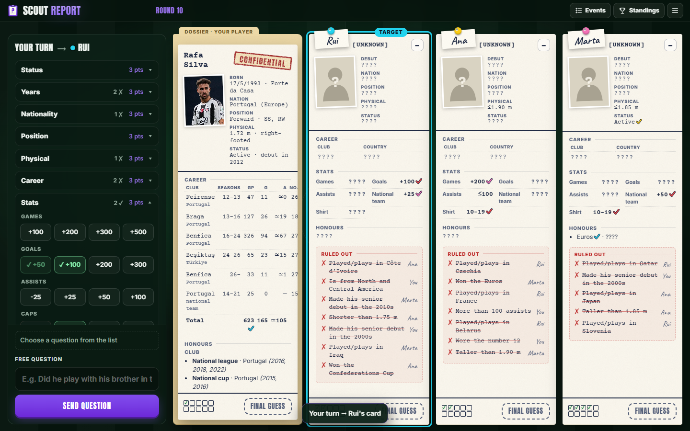
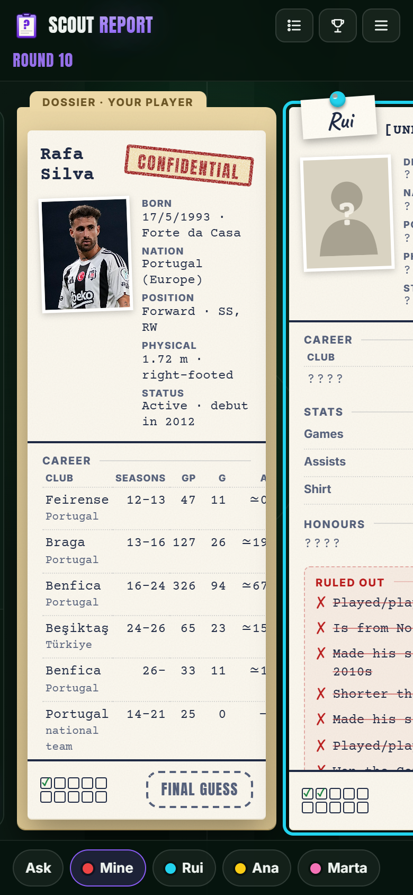

Scout Report
Guess your friends' secret player,
before they guess yours.
The football "Guess Who": ask, stamp and identify.
Scouting cards, a Joker Round, a Daily Report.
Free · play in your browser
The football "Guess Who": ask, stamp and identify.
Scouting cards, a Joker Round, a Daily Report.

